Every Game I Played In 2025
From Ulala to Legendza
17/12/2025
Sometimes I want to talk about a game, but don't want to write a whole article for it. So here's a sneak peek into my brain - games I played in 2025. This is mostly games finished with some other juicy inclusions I felt important to talk about! Time for the shocking reveal that I... mostly just play Nintendo games. That's my comfort food!
Sonic X Shadow Generations

Following in Frontiers' Shadow
Sonic is doing a very weird thing right now. Or, I mean... going open world isn't weird generally, in fact, it's very boring from a global gaming standpoint. Every AAA game under the sun is making a big open world adaptation and falsely misunderstanding the appeal of Breath of the Wild (a theme we'll see return later in this list!), and Sonic Frontiers is exactly that to me - a game that ditches the immaculate vibe of Sonic to be a bland, sparse island aesthetic with jingly piano and blue cybernetic flourishes.
...Or that's what I would say, if it were actually true - but Sonic Frontiers is not open world, it's more like a game that emphasizes big hub worlds that link to smaller, more focused Sonic levels. In that sense, it's not even different from a game like Sonic Adventure 1, where hubs like Station Square link together Emerald Coast and Twinkle Park. And the idea of having a big hub for Sonic to parkour around in is awesome! It actually makes those big hubs feel fun and worthwhile, rather than just empty space.
But Sonic Frontiers, and now Shadow Generations (which is vertiably a sequel to Sonic Frontiers, even if it's wearing the skin of Sonic Generations like a chimera) make a fatal flaw in disregarding the one, single thing that Sonic has staked it's legacy upon - that killer vibe. The world design, the bright and vivid colours, they are all so classically Sonic. But Shadow Generations doesn't have a big open world with an awesome aesthetic to do platforming challenges in... it has a bland, white void to do platforming challenges in. It's like cognitive dissonance in gameplay form.
The gameplay of this game rocks, and the actual levels do too, from music to visual effects - it's firing on all cylinders... except that hub world! Give it some colour and aesthetic and you've got something amazing. Imagine if instead of a bland, white void - the hub was a vibrant amusement park, like in Sonic Colours! Or a rocking cityscape to city escape from! Or even just the classic green and brown checkerboard hills... but give me something other than knockoff Zelda aesthetics and empty void. I believe in you Sonic Team!
(I do think Shadow Generations is a nice step up from Frontiers. So I guess that's some improvement!)
Beat Sketcher
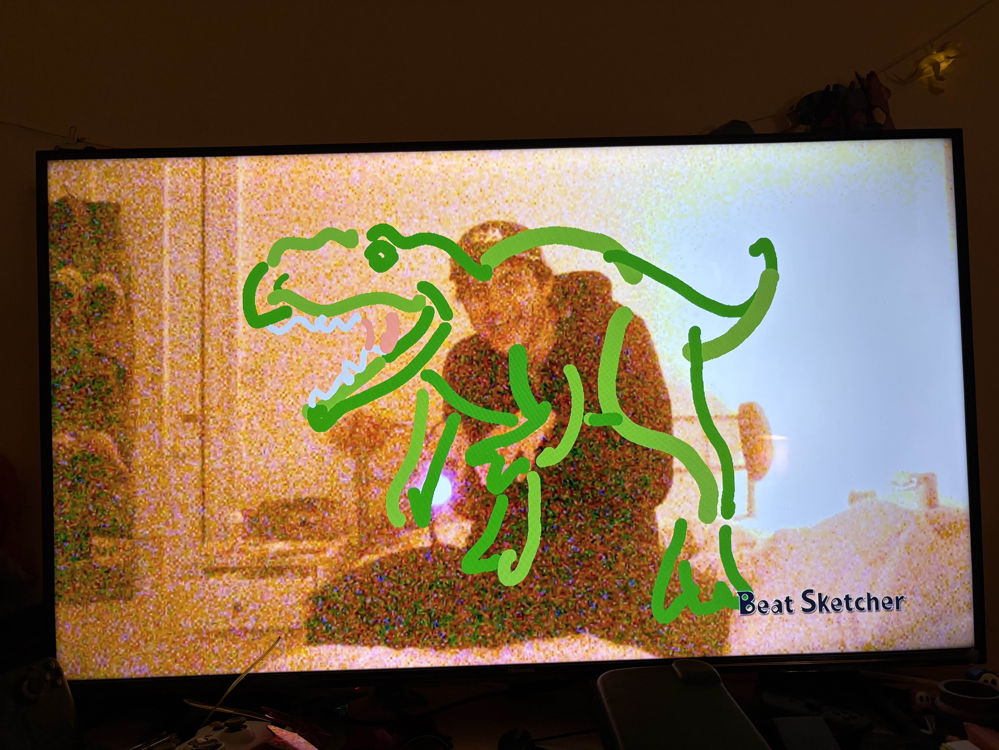I like to make music that... Moves people
Somehow I've never talked about this on my website, but I own basically every Xbox 360 Kinect game ever released. I love a janky weird peripheral, and I kinda just... decided to get every game for them. And that slope turned slippery, and I started to collect every Playstation Move exclusive, and uh... I guess I'm here writing an article about Beat Sketcher, an oft forgotten drawing DAW for the PS3.
I find the idea of drawing using the Move, and each line you draw adding an audio track synced correctly to the key and rhythm, just so fascinating. It's a bit Osu! It's a bit Mario Paint! It's just a bit quirky and weird. Not too much to say about this one, other than finding it a great expression of what weird control methods can do for making more abstract gaming experiences.
Guitar Hero 2
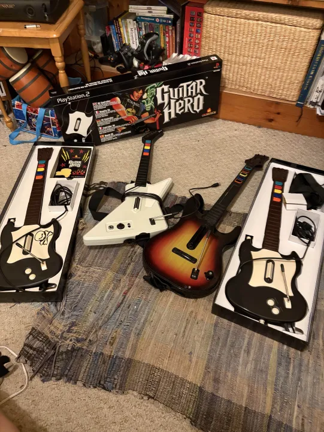Plastic Nonsense Slop
From one rhythm game accentuated by plastic crap to the next; Guitar Hero is a series I've always been aware of but never had the correct goop for it. But due to a fortunate circumstance, I ended up with 4 Guitar Hero guitars in my possession, and a relentless drive to see what this series has to offer. So whilst my good friend Henry (his website) was visiting, I brought out these guitars and put them to good use.
As in - I had to take a call in the other room, whilst he andSS my friend Cyps (her website) beat the entire career mode with our band "Cursed Orphan". But I did give GH a fair shake, and I had a good time. I moreso enjoyed the utility of using my USB guitar to play Clone Hero and slam down any song I was fixating on that day! Good times.
Paper Mario: The Thousand Year Door (Switch)
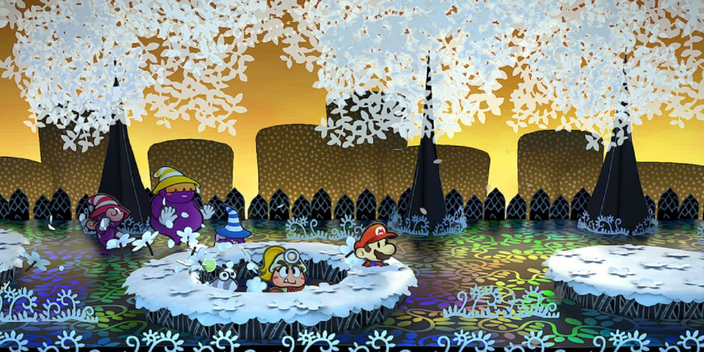Booked and Blessed
Throughout my entire life, The Thousand Year Door was very much "the one that got away" in terms of Nintendo games. I love Paper Mario 64 and Super Paper Mario as if they were my own children, but TTYD's huge price consistently stopped me from playing it. That is, until Nintendo finally remade the game for the Switch last year - which I played and adored, but just never finished until this year.
There are so many amazing things I can say about TTYD, but there are two things that specifically resonate with me. The battle system and it's meaningful choices, and the dialogue. The latter is fairly self-explanitory, if you've played any of my games you can see how much of an impact the writing style of this game has had on me. Something about the snark hits that perfect line of "whimsical and simple enough for kids, but cereberal and funny enough for adults" that I adore so much and has always resonated with me.
But that battle system? It's so good. A lot of JRPGs suffer from providing systems with just way too many micro-level choices that in turn null and void each other (have more to say about this later!), but Paper Mario's badge and battle commands system is so elegant. It lets people get into customising their loadout in such a stripped back way, intuitively making each level up count and make you feel more powerful without actually ever giving you Big Number Inflation. I'm sure some people like a huge number go up system, but for me that incredibly noticeable feeling of each point you progress in Paper Mario is unmatched. In fact, that's all that needs to be said: Paper Mario is unmatched.
Bonus shout out to the amazing new remixes music in the remake, brings the whole thing together.
Mario Kart World
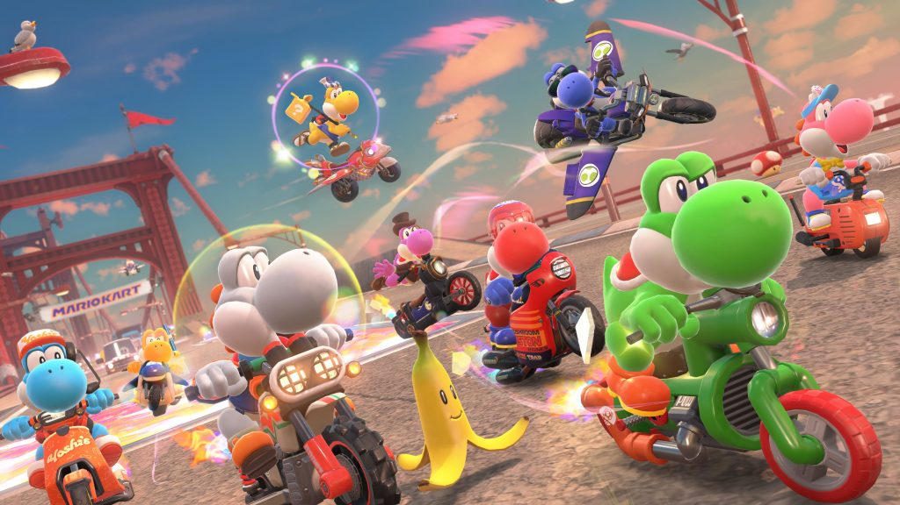A Road Trip for the Ages
The Switch 2 came out this year, and Mario Kart World ended up being a pretty controversial game, which is... truly bizarre to me. I've seen quite a lot of negativity surrounding this game, and it makes me sad! It feels like a really cohesive, exciting step for a game series that has felt incredibly standard for decades now. But to explain that, I should probably explain my relationship with Mario Kart 8.
As a staunch Wii U fan, Mario Kart 8 was obviously a huge part of my life when it came out. Every part of it felt like "the best Mario Kart could ever be" - gorgeous, mechanics so tight, course designs so cool and ambitious! It felt like the natural evolution of what came before with 7, and Wii before that. There are so many amazing courses in Mario Kart 8 - Mount Wario, Sunshine Airport, Cloudtop Cruise - even standard early-game courses like Toad Harbour and Mario Kart Stadium feel so awesome and just blew my little mind a decade ago. And when it got it's first two waves of DLC - they somehow exceeded that - with fantastically designed new crossover courses and fun new ideas.
Ten years on, Mario Kart 8 (now in it's Deluxe release, with 6 more waves of DLC) is bloated to the seams. Half of the game is taken up by visually bland looking courses that don't mesh with the first half, and track designs that don't take advantage of the gravity-defying track shift that 8 had prided itself on. Sure, some of those Booster Pass courses were good... but that's it. Some. MK8 used to be a game I would throw on any course and have a great time; now it was a game that I had to delicately navigate. And it brought to light something that is incredibly evident about Mario Kart - none of the games really have a... direction. Every Mario Kart (with the exception of Double Dash!!) is very much just... more Mario Kart. So the Booster Pass feels like a natural evolution of that. It's the MOST Mario Kart.
Mario Kart World, then, makes me really happy. Because it's not the most Mario Kart. It takes the eggs that have been delicately placed into the single basket and distributes them into completely different categories. The huge emphasis on the tricks system leads to so much more skill expression than Mario Kart 8 ever had. Each course feels like a playground for which to examine from every angle. I love the revamped character designs and expressions - it feels like Mario really has his fun back after Wonder! But by far my favourite thing about this game is how strongly it leaned into a specific aesthetic.
This game is a road trip - it's about driving around the Mario Kart World, incredibly literally - and it has such a reverence for the series history. All of the different outfits you pick up by sampling cuisine across the world, performing these mini-driving challenges and moving onto the next - it's literally sightseeing! It feels like a classic Mario 3D platformer - giving you these little challenges to prove your mettle at whilst you master the movement system. Remember when I said that Sonic Frontiers opened my eyes to how an open world game could actually be fun with fun movement? Mario Kart World is exactly that - you take my comfort movement system, in party games I have been mastering my entire life - and give me a whole world to explore in it.
The best bit of this game is the music. The soundtrack is so masterfully crafted to emulate the feeling of your custom-made, memory filled road trip playlist, remixing songs across the entire series, capturing the exact vibe of the situation. It's lounge-y, it's jazzy, it's got a bit of city pop, dance, it's immaculate. It's perfect, even. Easily one of the best video game soundtracks... of all time? Sure, others might have better original music - but in terms of sheer quality and aesthetic and style - it's kinda unmatched.
I think the main criticism that people have with this game is the intermission tracks - which... I guess I get. They are somewhat vapid and whilst the road trip feeling of driving place to place works in the open world - it's not as fun to actually race like that, especially when the courses are so tightly designed. The online prioritising them over the proper 3 lap tracks is a common criticism, which makes a lot of sense, and when I play with friends, I usually just stick to the full courses, or the open world, or doing the actual cups, or the rally tours, or like... I don't know! Everything else about this game is so spectacular to me, and stands out so much compared to it's predecessor in a really new and fun way, this one thing doesn't hold it back at all for me.
Super Mario RPG (Switch)
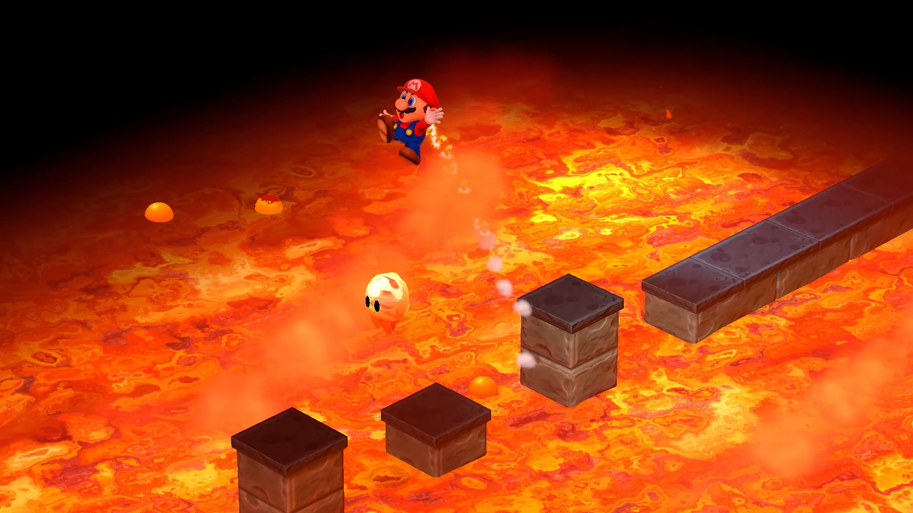I promise I play games that aren't just Mario games
Similarly to TTYD - I started this game when it came out but never came around to finishing it. One of my main resolutions for this year was to actually go back and finish some games I'd started and generally finishing way more games. Sure, the 16 games on this list isn't an overwhelming amount, but it is so much more than the past two years! And to be honest, finishing games I'd previously started was one of the main reasons I got my Switch 2; to make that console library feel fresh again (and to get a new set of Joy-Cons, since mine were super broken).
As for actually talking about Mario RPG... it's a great game! I don't think it's as hugely memorable as the Paper Mario series, but as their predecessor it's a fun romp. I particularly love how fast paced it is - I love JRPGs but I rarely have the patience for an 80 hour long marathon, so the fact that Mario RPG gives you the full experience of a classic JRPG in a shorter package is fine by me. Not to much to say about it really, just a great time.
Space Channel 5
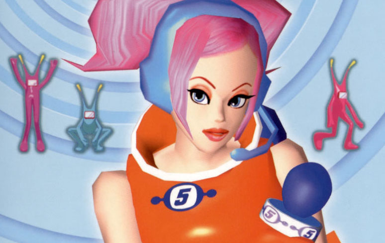What Dreams are Cast of
Here's the truth - this article is largely a trojan horse for me to mouthpiece about the glamourous and fabulous Space Channel 5 series; from which I played every single game this year. The Dreamcast has always been a console that I've been enamoured with - those who know me know that one of my signature clothing items is my little Dreamcast bag, and the sheer style and vision of Sega's output from this generation often sticks in my mind.
Space Channel 5 is on another level of camp. You play as a fierce reporter who struts onto crime scenes to vintage spy music and who dances to save the people of the galaxy. Sure, as a sentence, that's wild; but actually playing this game? And realising that this was a game that got large amounts of budget to be developed? It fills me with sheer joy.
This game is, above all else: camp. High camp. I've often regarded Sonic Adventure 2 as being the pinnacle of video game camp: earnestly genuine, baffling story and production choices, flawed yet exciting gameplay decisions nonstop. Like what do you mean Sonic rides in the president's limo and is told to go to the Great Pyramid of Giza to get a rocket and blast to the ISS? All whilst the audio clips over itself? What do you mean Knuckles has collect-a-thon levels that are entirely unlike the rest of the game that are punctuated with THEMED RAPS? What do you mean... ah, screw it, I'll just have to write an article about SA2 someday.
Anyway, I now realise that said camp was simply a factor of Sega's output for this console generation. They went out of the console business with the most style, the most bizarre ideas, the most fascinating ambition. They had the budget to commit to bold decisions, and they did - which makes me so happy. I often think mainstream gaming in the 2010s onwards focused so much on being safe, and providing more stuff for everyone - whilst the 2000s were focused on making weird stuff for specific audiences, which often didn't land - but soared so much higher. And Space Channel 5 really represents that.
Space Channel 5: Part 2
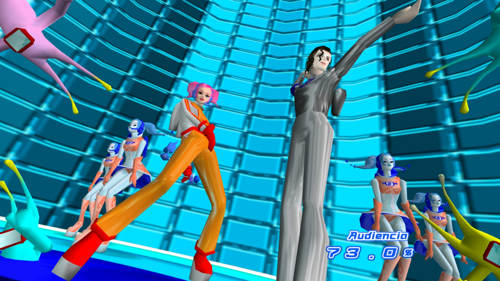They really don't make them like they used to
But not only did I play the first one - I played the second! Which is even more fun to play, a true all-timer in the rhythm game world. But I simply need to talk about one thing from this game: Space Michael.
Space Michael is a character who makes a cameo in the first game - he makes a few MJ-esque sounds, and has some MJ choreo as he dances. I assumed that this was just a fun (if now dated) reference that fits with SC5's general eccentricity, but Space Channel 5: Part 2 takes this a step further by making Space Michael a pivotal character in the game's story. And he's got full voice lines and is actually voiced by MJ, who apparently was a huge fan of Space Channel 5 whilst in development.
Genuine, actual insanity, absurd, wild, like? Huh? HUH????????????????????????????
In a world of designed-by-board-room AAA games, of crafting systems and open worlds, of live service dopamine mines; Space Channel 5 and it's sequel firmly snapped me from my cynicism and filled my heart with whimsy and passion. There is nothing quite as fabulous as this, and it's my favourite new game I've experienced this year. It's a one-of-a-kind series.
Space Channel 5 VR: Kinda Funky News Flash
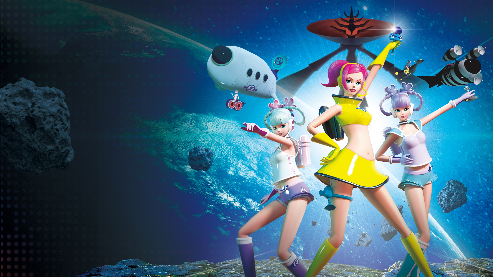Yes, every one of these games is getting a segment
Most only know about the first two, but Space Channel 5 does have a 3rd game... kinda. It's a VR game that feels a bit more like an interactive theme park ride, getting to step into the shoes and Be Ulala, and dance your heart out. It's got some fun homages to the previous two, but doesn't expand the grand cinematic universe of Space Channel 5. And it also doesn't feature Space Michael (for multiple, obvious reasons).
It's a fun little romp if you have a VR headset, but it's not a masterpiece like the first two games. But I don't think that really was the intention, so I'm not really criticising it for that. It feels more like one of those novelty VR games you'd see in an arcade or a SEGA themed cafe, but it's nice to see the series is still alive. I like to hope that SEGA just keeps Space Channel 5 in their back pocket, waiting in their back pocket, waiting for the right time to show the world the power of Ulala. Although if I see Ulala dancing in a white void or a BotW-esque empty island I will flip a table.
Donkey Kong Bananza
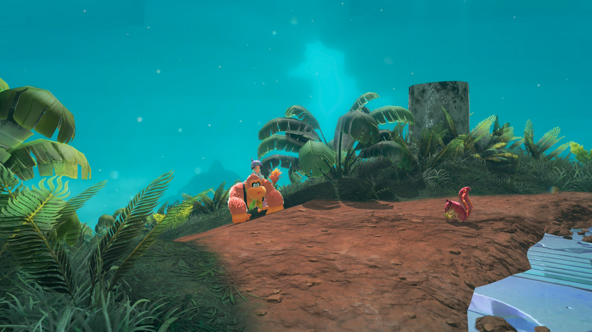tl;dr for tl;dk
I already wrote a much longer article about this game - but to cut a long story short, I think it's a game that initially wows with the spectacle of everything it provides, before overtime morphing into a box with several differently shaped holes with corrosponding blocks, that you have been provided a wrecking ball and an explicit instruction to destroy the intricate design laid before you. And that's just not my thing. To learn more about that, click right here!
Don't worry though! Even with my fundamental disagreeing with this game's design, I still think this game is ultimately kinda cool. And I like when Pauline does her Xtina impression, that's cool too. There's another Nintendo game this year that I've garnered even more beef with. Lets just say at least it took until the back half the game for me to lose patience with DK...
Xenoblade Chronicles 3
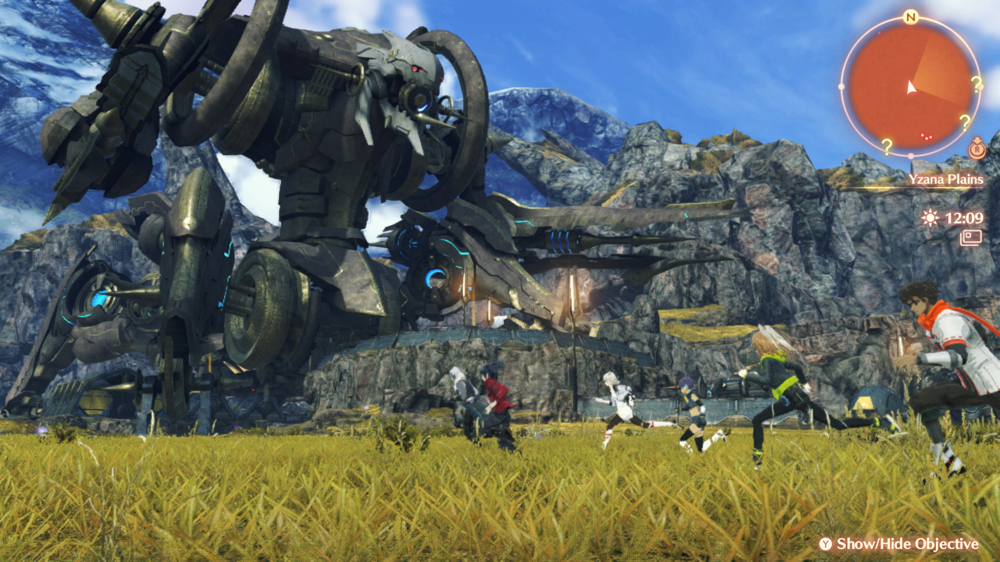Endless No(w) Longer
The original Xenoblade Chronicles has always been one of my favourite games of all time. It still easily and comfortably sits in my top 5 - an all-time great: with fantastic characters, storytelling, jaw-dropping world-design and a super fun battle system that's simple to learn but with enough dynamics and depth to keep you interested. I also really love the second one; not as much, but I still played over a hundred hours across it and it's fabulous prequel story Torna: The Golden Country.
When I first played Xenoblade 3... I dropped it about halfway through. It just didn't hit for me - I remember liking it, but finding the pacing way too slow, and not really attaching to the characters or the battle system in the same way. But it always felt like one I had to come back to - that at a different time in my life, I'd be able to accept this masterpiece for what it is.
That time is now - I've finished Xenoblade 3, and uh... mixed feelings! I still agree with pretty much all of my criticisms from when I first played it. Xenoblade 3 has such an overpowering premise that it kind of kills a lot of the interesting diversity of character. All 6 of your main characters are these soldier children stuck in an endless war and it leads very little room for them to have unique and interesting backstories or nuance in their character traits. People do really love these characters, which makes sense - it's a very coming-of-age, teenagers finding independence kind of viewpoint that really resonates with some. Obviously, the point is that they are very robotic as soldiers and gain emotions over time, but it's so heavy-handed, and it makes these characters feel very dull to follow for the most part.
This absolutely isn't helped by the pacing of the game, which is a slog. 2 is also often criticised for its pacing, but 3 is atrociously slow and tedious. It always feels like the player is 20 steps ahead of the characters, which just isn't fun. I remember being blown away and excited by the plot twists in Xenoblade 1... whereas the first half of 3 feels entirely predictable. Up until a certain point (which I'll get to).
The battle system also feels more like time-wasting than anything else. Rather than each character having strengths and weaknesses - each character has access to a completely homogeneous class pool and can do anything, and you are actively encouraged to swap their class constantly, which makes actively building your characters a nightmare. It felt pointless to manually change their equipment, since the game would auto-equip relevant equipment anyway and you'd only use each class on each character for a short period of time anyway, so it all began to feel... pointless.
When I last played the game, I stopped around the middle of Chapter 4. This time, I replayed completely from the start - and I found the most upsetting thing; right after the point where I stopped... is the point where the story gets really, REALLY good. The stretch from mid-Chapter 4 to the start of Chapter 6 is one of the peaks of the entire Xenoblade series. But unfortunately, how I felt about the first half didn't really change, and that final chapter kinda overstays its welcome. Tough act following peak, and so on.
It's interesting - because what I've written here is broadly quite negative. And even stuff that I didn't touch upon here, I'm not too high on. The music is great, but not nearly as strong as the rest of the series. The world design is still awe-inspiring, but there's nothing as striking and inspired as Satorl Marsh or Uraya. But uh... I still look back really fondly on this game? I finished it and remember thinking "that was a solid 8/10!" And I feel like I should have a lot more positive to say about an 8/10, beyond "the story gets good after 50 hours."
Maybe Stockholm Syndrome is real after all. Maybe I really am stuck in the endless now...
Hades 2
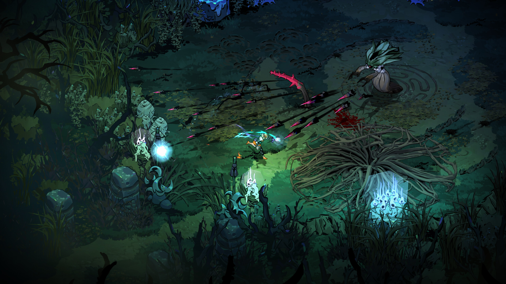Absolutely Hexcellent
I really loved Hades 2 - but I think it's probably the game on this list I have the least to say about. I feel pretty much exactly the same with it as I did about the first Hades. How it mixes the roguelike genre with an unfolding story is so compelling and is what makes the genre click for me where other roguelikes don't. The character design is out of this world, the art style looks so cool in motion, and it's interpretation of Greek Myth is wonderful to see as a kid who stayed up reading The Usborne Book of Greek Myths many late nights.
The main thing I liked more about this game compared to it's predecessor is the progression, rather than giving you one campaign to continually throw your head against; there's a separate route with new bosses that allows you to make a lot more progress even when you hit a brick wall. Sure, it's a functional doubling of the content - which makes sense for a sequel; but it's really the choice provided which makes it so much more appealing. Spreading it out like that is hugely to the game's benefit - two campaigns with four areas feels much better than one campaign with eight areas, for example.
I might say it's a better game, but feel like the original Hades had a lot more impact on me what I played it. It's a very Super Mario Galaxy 2-esque sequel; even more of what you loved from the first game, but it doesn't hit the same as the first game because... it did it first! And that first one just has a bit more sentimentality, and came at a specific time.
And as such, I'd probably rank Hades 2 lower on a "year-end" list than I would rank Hades 1 on it's respective year-end list. It would still win my Game of the Year, based on the Game Awards nominees (because the only other one I played was DK Bananza, to which my thoughts are fairly clear). But over all the games I played that released in 2025... I think Mario Kart World still edges it out for me.
Pokémon Legends Z-A
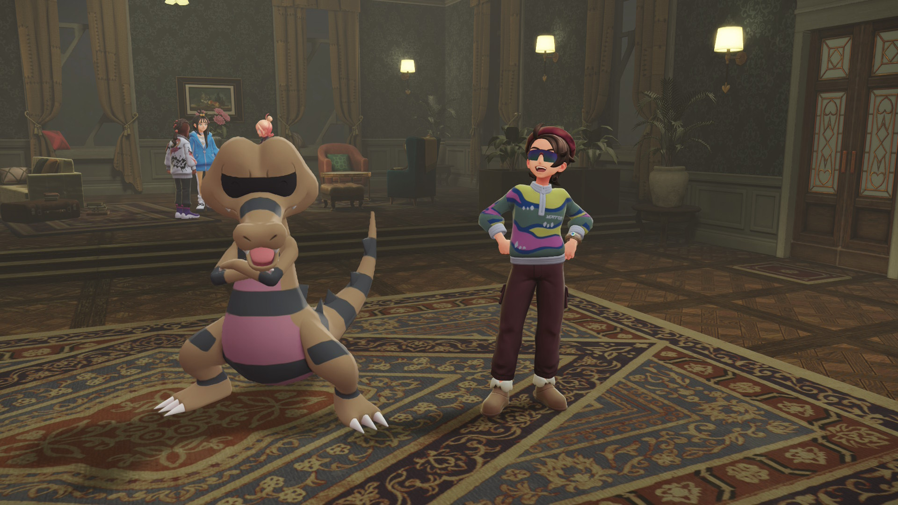From Z to B+ (at Best)
Pokémon on the Switch has been... dicey, to say the least. This is all my opinion, but Sword and Shield felt like Pokémon Paint-By-Numbers, Brilliant Diamond and Shining Pearl are a re-release of a game that got a significantly better re-release almost 20 years prior, and Scarlet and Violet suffer from clashing game design choices and a general lack of polish, at least at first release. Legends Arceus was fairly beloved, but really didn't click for me - feeling too far removed from what I enjoy about Pokémon - team building, battling, and worlds full of life and personality in every bit.
Some of those complaints still apply to Legends Z-A (a game I have exclusively been pronouncing as "legendza", and I will continue to), but this game really nails that latter component - it's full of life. Focusing on one city was a fantastic idea - it leads to a fleshed out cast and hundreds of little character interactions and quests. Whilst the battle system isn't the most strategic thing out there (and ironic that it's so similar to Xenoblade's considering I played them so close together), it is so excellently integrated and works so much better for a more explorative game like this. No stop and start turn-based battles, it's just super seamless.
I do agree with the criticisms that the production value needs to be upped - the lack of voice acting is the most glaring thing to me - especially in cutscenes. If Pokémon wants me to take its storytelling seriously in a 3D space, it needs voice acting in it's cutscenes. It was awkward on 3DS when Sun and Moon was trying to be serious with it's story, it was awkward on Switch with Scarlet and Violet trying to be serious with it's story, and it's especially awkward now on Switch 2 in 2025. I've also seen criticisms of the buildings looking too copy-paste, which I definitely get, especially having been to Paris this year and seeing how every little fence-post in that city feels ornate and bespoke.
But neither of those elements feel like dealbreakers to me. I think this year has made me realise that I value game design above basically all other aspects of a game. SV is kinda soiled by it's design to me: the open world structure with the lack of level scaling feels awful to me. Whereas Legendza is broadly similar in production value but just... doesn't do that, and easily becomes my favourite Switch Pokémon game. Not a hugely high bar to clear, though...
Fire Emblem: Path of Radiance
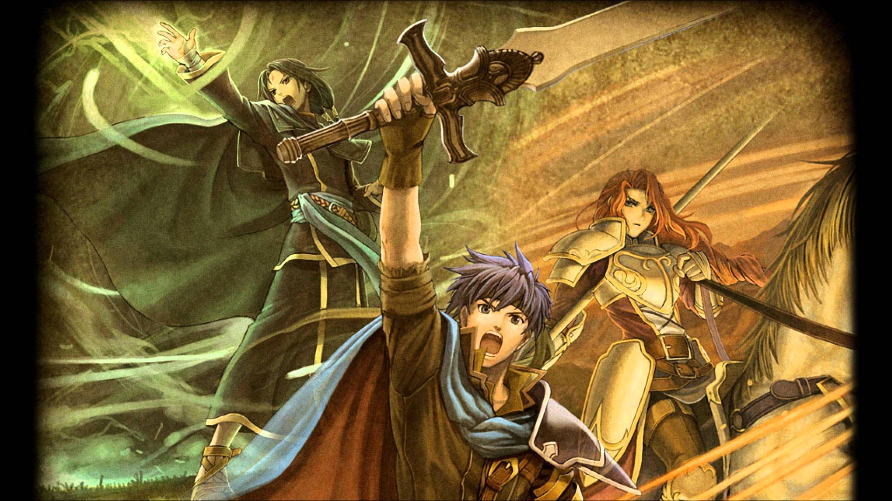The (re-)Awakening of my long dormant FE obsession
Do you have a game series that you adored as a teen... and then stopped adoring as a slightly older teen? That's Fire Emblem (and Ace Attorney, but that's a separate story) for me. I loved Fire Emblem so much - I'd played a little bit of every game in the series, and finished more than half. But by the 2020s, I'd just sorta... lost interest. I liked Three Houses, but the pacing turned me off from replaying it, and I guess by the time I was in uni there were other things on my plate. I never played the most recent game, Engage, and just kind of moved on with my life. Until this year.
I don't think it was the announcement of that new FE game, Fortune's Weave - it seems like a sequel to Three Houses which, as I said, wasn't an all-time favourite. But something brought me back to the series - and I decided to finish the game I started but let slip me by: Path of Radiance.
This game is really Fire Emblem at it's best, just Fire-ing (heh) on all cylinders. The world is rich and nuanced, the characters are easy to get invested in, and the gameplay and systems feel so right (if a little on the easy side for FE; but even that's nice as a re-entry point).
I love strategising and optimising in any sense - but combine that with endearing characters to get invested in and the hint of randomness, it's a storytelling marvel. It's the kind of game that naturally builds divergent storytelling with a linear story, which is my kinda favourite thing ever of all time ever. I love how randomness and individual player decisions can create ripple effects that structurally change the game, although within some limit. Three Houses (which I feel like I'm using as a punching bag, I actually did like that game!) gives the player so much choice in how they want to build their characters that they start feeling like blank slates, that anyone can be anything. Whereas classic FE really de-emphasises this, and gives the player specific units that do specific things, with just enough variance and randomness in how they grow that influences player choice uniquely per playthrough.
For example; in my run of PoR, I tried using the character of Marcia - who I've heard people describe as the strongest in the game, but for me; she ended up getting a few randomly bad level-ups, and wasn't as fun for me to use, so I decided to bench her and use some less popular units instead, like Rolf - who ended up being one of my strongest units by the end of the game. That randomness leads to unique storytelling moments, someone can play the game and go "man, Rolf is an awful unit", whereas I can play the game and go "my Rolf ended up being one of my strongest units, and let me use weird utility like the Double Bow that I never would have otherwise!" And it doesn't feel like you got a lesser experience, both are good! This is obviously compounded when playing with perma-death, which I usually don't do, but I am open to trying now that I'm a bit better at the series.
Whilst I'm sad I never finished at the time, I'm kind of glad - because it gave me a hook back into the series. It's such a fantastic game and I've already started chipping away at the sequel, Radiant Dawn - which really has it's claws in me and I might like even more than Path of Radiance.
Ring Fit Adventure
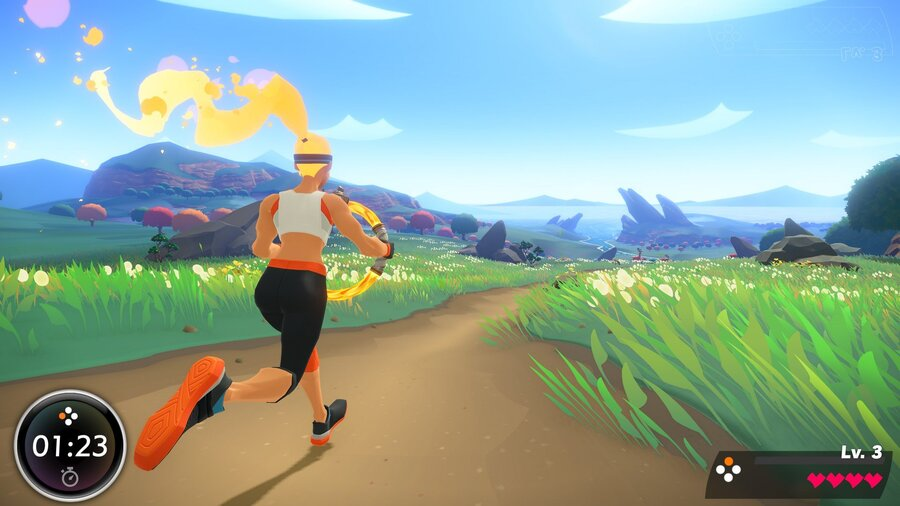Welcome back to Cardboard Constructing, Cow Milking Nintendo
This right here? This is the Nintendo I love. This is Virtual Boy Nintendo, this is Gamecube to GBA Link Cable Nintendo, this is Wii U Nintendo. I'm so happy that this Nintendo still makes the occasional appearance - and actually, that this Nintendo did so well in the modern age. Granted, I think Ring Fit's success largely comes from the pandemic, but I'm still playing it for the first time in 2025 and having a blast, sweating my ass off, getting those gains.
This might be the most flawless game on this list - there's not really a single thing I would change about it. Definitely not my favourite game on this list, it wouldn't even crack the top 10 - but it is exactly what it wants to be. Granted, what it wants to be is really simple - but it is so excellently polished at that One Thing. Even TTYD - I'd maybe cut down on the backtracking a bit. Even Space Channel 5, I'd maybe change the continue system to be a bit less unforgiving. But Ring Fit? It just is what it is, and sometimes that is all you need.
Metroid Prime 4: Beyond
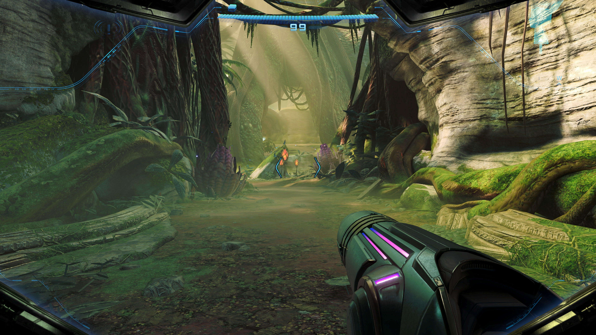More like Midtroid Prime Bore: Me Yawned, amirite?
You, dear reader, are about to see a side of me that is rarely seen. I prefer to be positive and constructive, and I feel like you've seen that throughout this article. Even with DK, which I didn't love; I still think that's a fascinating game that makes decisions that just aren't for me. But this game? Hoo boy. Buckle up.
Metroid Prime has always had a bit of an identity crisis. The first game feels the most like classic Metroid: alien planet, linear progression in a non-linear world, cool ass vibes. The second game, Echoes, feels way more like Zelda: light and dark world, linear dungeons with items and big bosses at the end of them. Big, terrible boss fights. (Note: I do not like Prime 2).
The third game, Corruption, to me, felt like it wanted to eat Halo's nachos - way more linear, with big action cutscenes and loads of characters and dialogue. Distinctly un-Metroid. But I ended up liking Prime 3 by the end - maybe it's because I was younger, more naive. Maybe it's because I got to shoot the friendly characters to death instead of having to deal with their annoying ass Marvel movie "erm... he's right behind me, isn't he"-esque quips.
Rather than feeling inspired by Metroid, Zelda, or Halo - Prime 4 feels inspired by Star Wars, but not that classic Star Wars you love; but the late era sequel trite of The Rise of Skywalker. Rather than looking down on it's audience, it shouts down at them with a megaphone. It is as bad as people say Navi in Ocarina of Time, or Fi from Skyward Sword is. It's weird, because I can get over bad dialogue in a game a lot of the time, but this feels so un-Metroid, so pandering, that the first hour of the game babysitting Miles around genuinely made me want to snap my Switch in half.
I think another reason why I couldn't get over the immersion breaking dialogue was the game structure, and that god-awful desert. I can tell they included this, to make the game feel bigger; to physically give Samus more land to travel between objectives. But it's so pointless and counter-intuitive to the very idea of Metroid, this interconnected world, where getting one upgrade gives you an "a-ha!" moment to go to another location. Because you aren't spiraling back around on yourself due to this huge ass empty pointless desert - it makes it feel a lot more like Prime 2 and it's focused dungeons. And I didn't like it then either! Rather than making the game feel bigger - it feels way, way smaller, and is way more transparent.
Just the structure as a whole, I didn't like. Sure, the previous games had McGuffins to get, like the Chozo Artifacts in Prime 1 - but they felt like final hurdles to find and overcome using what abilities you had gained. They weren't a big overarching thing to do throughout. Having the structure be "Get 5 Teleporter Keys" just feels really reductive. It stops the game from feeling naturally sprawling, and it becomes "oh god, I need to do this X more times", or "oh, I've already done X% of the game?" It's a self-fulfilling anti-climax.
And that's it right there. Prime 4 is anti-climactic. A game that I've been incredibly excited about feels like it has come and gone with a whimper, and I have very little motivation to finish it. After a while I realised I'd rather be playing Fire Emblem again, so I just switched to playing Radiant Dawn. In fact, it made me realise I'd rather be playing Metroid Dread, a game I love so much I'd pretty confidently say it's my favourite thing Nintendo's released on the Switch. Maybe I'll finish it before the end of the year, I'll update this if I do. Otherwise, I guess the year ended with more of a whimper than a bang.
So that's my list of games! If I had to rank this bizarre set of games... I don't know, something like this?
- Paper Mario: The Thousand Year Door
- Space Channel 5: Part 2
- Space Channel 5
- Mario Kart World
- Fire Emblem: Path of Radiance
- Xenoblade Chronicles 3
- Hades 2
- Pokemon Legends Z-A
- Sonic X Shadow Generations
- Super Mario RPG
- Ring Fit Adventure
- Donkey Kong Bananza
- Beat Sketcher
- Space Channel 5 VR: Kinda Funky News Flash
- Guitar Hero 2
- Metroid Prime 4: Beyond
What an insane set of things to rank. Like yes, I do think that PS2 rhythm game full of liscenced music Guitar Hero 2 is better than Metroid Prime 4 but worse than the VR adaptation of Space Channel 5. Of course.
If you found this fun, or heavily disagree with an opinon on a random game listed here - send me an email! It's a small world out there - and an even smaller set of people that have stumbled across my blog, but I think that tiny set of people should stick together.